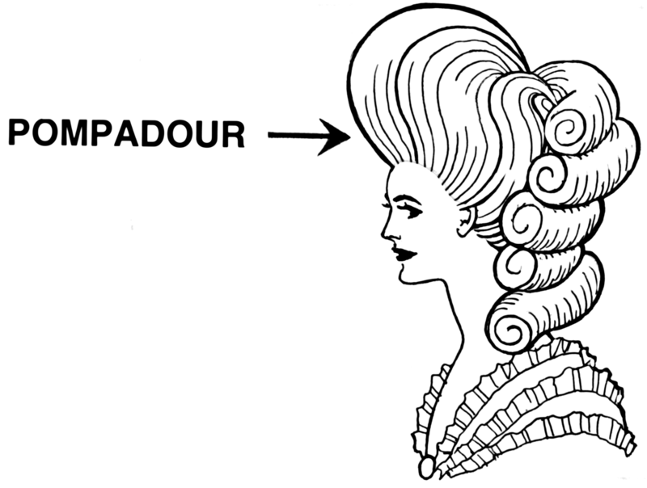

chapter5.3--handout
Background Information
Adam style (亚当风格)
Finally we came to Gatsby’s own apartment, a bedroom and a bath, and an Adam study. （最后我们来到盖茨比本人的套间，包括一间卧室、一间浴室和一间小书房。）
Gatsby的这间书房是亚当风格。这种风格是乔治亚风格的发展与升华，在欧洲和美国东北部流行，它吸取了亚当兄弟（Robert Adam and James Adam）对意大利文艺复兴风格的研究成果。与乔治亚风格相比，屋檐齿饰加长，正门上方加了一个半圆形或椭圆形气窗，墙面窗户有装饰窗修饰。
亚当风格的典型特征是将装饰性新哥特式细节与经典框架相结合，而所谓的“埃及”和“伊特鲁里亚”（Etruscan）设计图案是次要特征。

The Love Nest & Ain’t we got fun(1920s流行乐曲)
When Klipspringer had played The Love Nest, he turned around on the bench and searched unhappily for Gatsby in the gloom. （克利普斯普林格弹完了《爱情的安乐窝》之后，在长凳上转过身来，不高兴地在幽暗中张望着找盖茨比。）
“In the morning, In the evening, Ain’t we got fun——”（"每天早上，每天晚上，《玩得欢畅》……"）
The Love Nest 和 Ain’t we got fun 这两首来自20世纪20年代的流行歌曲（属于Tin Pan Alley流派）。The Love Nest 来自著名作曲家Lou Hirsch的音乐剧《玛丽》（Mary）. The Love Nest 是说一所在农场的攀有藤蔓和玫瑰但充满爱和温暖的小房子，要好过金碧辉煌的宫殿。讽刺的是，Gatsby此刻正在向Daisy炫耀他的豪华住所，意在以其魅力使她折服。
Ain’t we got fun 在1920年代是首次发行的狐步舞曲子。Ain’t we got fun 描述的是一对来自工人阶层的夫妻，虽然生活困顿贫穷，但依然能够苦中作乐。它表达的是爱情和幸福并不依赖于物质。
听到这首歌之后，困惑的表情又回到了Gatsby脸上（I saw that the expression of bewilderment had come back into Gatsby’s face），他好像又在怀疑此刻眼前的幸福了，作者也在这里埋下了伏笔。
Vocabulary
consume
vt. 消耗，消费；耗尽（to use sth, especially fuel, energy or time）
原文：After his embarrassment and his unreasoning joy he was consumed with wonder at her presence.
他起初局促不安，继而大喜若狂，目前又由于她出现在眼前感到过分惊异而不能自持了。
💧consume 除了一般表示“消费，消耗”外，还可以表示“（使）沉溺”，这时候有两种表达方式：sth consumes sb; sb is consumed with sth. 比如原文中的he was consumed with wonder就相当于wonder consumed him. “他深感惊诧”
💧consume的名词形式consumption也很有意思，它不仅可以表示“购买，消耗”，还可以指“肺结核”（TB, Tuberculosis）, 因为这种疾病会慢慢地消耗一个人的精力和健康（gradually consuming its victims）.
colossal
adj. 巨大的（extremely large）
原文：Possibly it had occurred to him that the colossal significance of that light had now vanished forever.
可能他突然想到那盏灯的巨大意义现在永远消失了。
💧colossal 指“非常庞大的”（具体或抽象都可以形容）. 比如：The task they face is colossal. 他们面临的任务十分艰巨。
Crush Your Problems
- He hadn’t once ceased looking at Daisy, / and I think / he revalued everything in his house / according to the measure of response / it drew from her well-loved eyes.
他一刻不停地看着黛西，因此我想他是在把房子里的每一件东西都按照那双他所钟爱的眼睛里的反应重新估价。
💧表达精讲
①hadn't once done 是过去完成时的结构，表示“一次也没有”；
②cease doing “停止做”，cease比stop更正式，常用于书面语；
③the measure of response, measure指“衡量，评判标准”，the measure of response也就是“以（Daisy）的反应作为评判标准”（注意measure和response在这里是同位关系 ，而不是从属关系）；
④it drew from her well-loved eyes，it drew from是一个省略了that/which的定语从句，修饰response; it指前面提到的everything; draw sth from sb表示“引起（某种反应）”；
⑤well-loved 指much, dearly loved by Gatsby, “为Gatsby所钟爱的”。 - Sometimes, too, / he stared around at his possessions / in a dazed way, / as though in her actual and astounding presence / none of it was any longer real.
有时他也神情恍惚地向四面凝视他自己的财物，仿佛在她这个惊心动魄的真人面前，所有这些东西就没有一件是真实的了。
💧表达精讲
①possession 表示“占有，拥有”，复数形式特指“个人的所有物，财产”，相当于belongings;
②in her actual and astounding presence, actual强调“实际的，真实的”（to emphasize that something is real or exact）; astounding指“令人惊骇的”；in sb's presence指“当着某人的面，在某人面前”；
③none of it 即none of his possessions（注意possessions用第三人称单数指代）；
这里表明Gatsby对于Daisy从他的幻想里走入现实依然感到惊诧无比，而且这种“真实感”甚至让其他一切都变得不真实了；同时这种对比也有一定的讽刺意味，因为最后会证明Daisy和其他虚幻易逝的一切没有差别。 - He had been full of the idea so long, / dreamed it / right through to the end, / waited with his teeth set, / so to speak, / at an inconceivable pitch of intensity.
这件事他长年朝思暮想，梦寐以求，简直是咬紧了牙关期待着，感情强烈到不可思议的程度。
💧表达精讲
①be full of the idea 指“脑子里充满了这个想法，日思夜想”；
②right through to the end 即all the way through to the end, 表示“从头到尾，一直”；
③with his teeth set, so to speak, at an inconceivable pitch of intensity , so to speak是插入语，表示“可以说，总之就是”；inconceivable指“不可思议的”（too unreal to be thought possible）, pitch则指“（感情或活动）的强烈水平”，比如：He screamed at her in a pitch of fury.（他生气极了，对着她大喊大叫。）所以set at an inconceivable pitch of intensity也就是“处于不可思议的紧张程度”。 - Compared to the great distance / that had separated him from Daisy / it had seemed very near to her, / almost touching her.
和那把他跟黛西分开的遥远距离相比较，那盏灯曾经似乎离她很近，几乎碰得着她。
💧句式拆解
①这个句子的主干是：...it had seemed very near to her... 其中it指the green light;
②Compared to the great distance that had separated him from Daisy 是过去分词结构作状语，表示“和……相比”；其中that had...作定语从句修饰distance;
③almost touching her 是现在分词结构作状语修饰it (the green light). - He had thrown himself into it / with a creative passion, / adding to it all the time, / decking it out / with every bright feather / that drifted his way.
他以一种创造性的热情投入了这个幻梦，不断地添枝加叶，用飘来的每一根绚丽的羽毛加以缀饰。
💧句式拆解
①这个句子里的it都是指上文的his illusion, “Gatsby的幻梦”；
②adding to it...和decking it out...是现在分词结构作伴随状语。
💧表达精讲
①with a creative passion 直译为“以一种创造性的热情”，这里指Gatsby为他的幻梦进行了很多“装饰”和“美化”；
②add to 表示“增添（某种品质）”，我们在前面学习过，这里指“增强这种热情”；
③deck out 表示“（用鲜花或旗帜）装饰”；
④every bright feather that drifted his way, drift指“飘荡，漂移”，...that drifted his way可以理解为“飘向他的（每一片亮丽的羽毛）”。 - No amount of fire or freshness / can challenge / what a man will store up / in his ghostly heart.
再多的激情或活力都赶不上一个人阴凄凄的心里所能集聚的情思。
💧句式拆解
No amount of...can challenge... 表示 “没有……可以赶上/超过……”
💧表达精讲
①fire or freshness 表示“热情和朝气”，fire指strong emotion, freshness指vitality.
②what a man will store up in his ghostly heart, store up指“把（情感，思绪）藏在心里”；ghostly指“幽灵的，可怕的”，这里暗指过去总是像鬼魂一样萦绕在Gatsby的心里（Gatsby is constantly haunted by the past）.
Content Analysis
第5章的内容不多，但起着非常关键的作用——推动整个故事情节往高潮（Climax）发展，我们把这部分叫做剧情上升（Rising Action）. 因此前4章属于剧情介绍（Exposition），主要描述故事的背景、场景及人物，并且引入矛盾（Conflict）.
而在第5章中，随着Daisy和Gatsby的正式重逢，矛盾更加凸显出来，但此时仍没有推向顶点，因此给后面的情节发展留下了悬念（Suspense）. 今天提供的两条线索其实也是作者在这部分埋下的伏笔，对于把握接下来的故事走向非常重要哦~
首先，第一条线索，暗示了最后Daisy为什么还是没有选择Gatsby——
💧Clue 1:Daisy is much more impressed by the display of materialism.
Evidence 1: “They’re such beautiful shirts,” she sobbed, her voice muffled in the thick folds. “It makes me sad because I’ve never seen such — such beautiful shirts before.”
"这些衬衫这么美，"她呜咽地说，她的声音在厚厚的衣堆里闷哑了，"我看了很伤心，因为我从来没见过这么——这么美的衬衫。"
Gatsby满心欢喜地向Daisy展示他的家居摆设以及一切奢华至极的物件，电影里面有一个真实还原的镜头——Gatsby把一件一件衬衫扔在Daisy面前，结果Daisy感动地大哭，理由是她从来没有见过这么漂亮的衣服。这一幕其实也非常讽刺，因为让她感动的并不是Gatsby的真心和努力，而是他展现的财富和浮华。
与之形成对比的是另一幅画面，Daisy对于Gatsby日夜凝视的对岸的绿光丝毫没有在意——
Evidence 2: “If it wasn’t for the mist we could see your home across the bay,” said Gatsby. “You always have a green light that burns all night at the end of your dock.”
"要不是有雾，我们可以看见海湾对面你家的房子，"盖茨比说，"你家码头的尽头总有一盏通宵不灭的绿灯。"
Nick和Daisy都没有对Gatsby的这句话给予回应，似乎只有Gatsby一个人沉浸在里面。此刻Gatsby的心情应该是波涛汹涌的，如此隐忍的秘密就这样脱口而出了，他一定在等待Daisy的揣测，比如“Gatsby怎么知道我家码头的灯总是通宵不灭”“他是为了什么才会整夜守望”……这些想法是否曾经在她的脑海里徘徊，或者即便只是一闪而过？
另一个重要的线索则是暗示Gatsby的梦并不是切实的，而且是永远无法触达的——
💧Clue 2: Gatsby's dream is not indeed real and viable.
Evidence 1: Now it was again a green light on a dock. His count of enchanted objects had diminished by one.
现在它又是码头上的一盏绿灯了。他的神奇的宝物已经减少了一件。
当Gatsby向Dasiy暗示他每天都在守望她家码头上的绿灯但没有得到回应时，紧接而来的就是绿灯仿佛在一瞬间失去了它的魔力（count of enchanted objects表明了Gatsby把他的幻想和渴望寄托在了各样事物上）。绿灯之所以不再迷人，不仅是因为此刻Daisy就在他的身边，所以他不再需要凝望绿灯来幻想Daisy，更是在暗示当愿望和现实相交的那一刻，结果可能是失望。
这种落差感，按照Nick的话来说，并不是由Daisy本身带来的，而是Gatsby本身的幻梦过于强大——
Evidence 2: There must have been moments even that afternoon when Daisy tumbled short of his dreams — not through her own fault, but because of the colossal vitality of his illusion.
那天下午一定有过一些时刻，黛西远不如他的梦想——并不是由于她本人的过错，而是由于他的幻梦有巨大的活力。
tumble short of也就是fall short of, 表示“达不到（目的，期望，标准）”；这里直接表明了令Gatsby着迷的，不仅仅是这个人，更是Daisy这个名字所代表的一切。他在Daisy身上寄托了对美好过去、名利金钱、个人奋斗的种种愿望和憧憬。所以当Daisy作为一个实在的人走进现实，Gatsby可能突然就感受到了一种幻灭性。
在本章的最后，两个人的这次会面戛然而止——Then I went out of the room and down the marble steps into the rain, leaving them there together. Nick选择了置身事外，这次的会面会对他们彼此的生活产生什么样的影响？Gatsby的下一步计划是什么？我们继续期待之后的故事。
Today's Bonus
💧1920s Men's Hairstyles 1920年代的男士发型
“I adore it,” exclaimed Daisy. “The pompadour! You never told me you had a pompadour — or a yacht.”（"我真爱这张相片，"黛西嚷嚷道，"这个笔直向后梳的发型！你从来没告诉我你留过笔直向后梳的发型，也没告诉我你有一艘游艇。"）今天我们来看看20世纪20年代的男人一般都留什么样的发型吧~
Pompadour是一种将头发全部往上梳，往侧面梳的造型，将脸部轮廓完全露出来；最大的特点是前额部分的头发会往上后方梳得很高，留个蓬蓬的弧度。该发型灵感取自法国蓬帕杜夫人（Madame de Pompadour），这种发型就是由她开始推行的。

在20世纪20年代之前，这样向上梳起的发型是当时非常流行的女士的发型，通常还在前额上留一绺卷发。
留这种发型的男性把前面的头发向上梳起，让头发看起来犹如飙过车的流线走向与厚度。20世纪50年代，Pompadour发型在男性乡村摇滚乐艺术家和演员中风靡一时，其中包括马龙·白兰度（Marlon Brando）和詹姆斯·迪恩（James Dean）.
20世纪后期，著名的乡村摇滚乐歌手布莱恩·塞瑟（Brian Krause）留的也是这种发型。另外，还有一些拉丁式的蓬帕杜发型，它们与欧洲和阿根廷的探戈（Tango）时尚潮流关系更密切，偶尔也与20世纪后期的其他一些音乐风格有关。
在20世纪20年代，男人几乎总是戴着帽子。尽管这一潮流随着年轻的大学男生逐渐褪去，但“帽子男”和“没帽子男”（hatted and unhatted men）的发型都是一样的。这样的话，发型一般需要留成扁平、光滑、有光泽的中等长度头发。人们还给这种类似头盔的男子发型起了几个绰号，如“漆皮头”（“Patent Leather” ）或“头盔头”（“helmet head”）.
为了得到光滑的外观，男士们使用了一种名为“发蜡”（Brilliantine）的产品。它是油性的，接触到任何东西都会产生粘稠的残渣（slimy residue）. 20世纪20年代的版本并不是为了保持一个形状，而是为了保持平滑和平整。有时也会用便宜的凡士林（petroleum jelly）代替昂贵的发蜡。
一旦涂上了发蜡，男人就会用三种流行的方法之一将头发分开。首先是所有的头发都是直的（all straight back-tops）——头顶梳过头顶，两边梳过头顶，然后斜着梳到头顶的后面。第二种选择是直接在中间分开（part directly in the center），或者稍微偏离中间（slightly off center- whichever）——以哪个分开最帅气为好。第三个选择是一边更深一些（deeper part on one side）.
所以从1920年到1929年男士的发型几乎没有变化，最显著的变化是人们仍在使用发蜡，但数量减少了。现代也有很多男士喜欢留这种复古的发型。学习到了，下次可以洋气地跟托尼老师说给剪一个Pompadour~